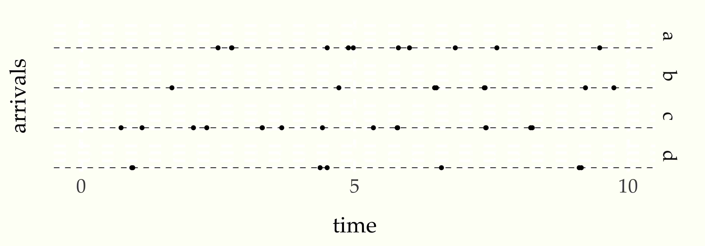
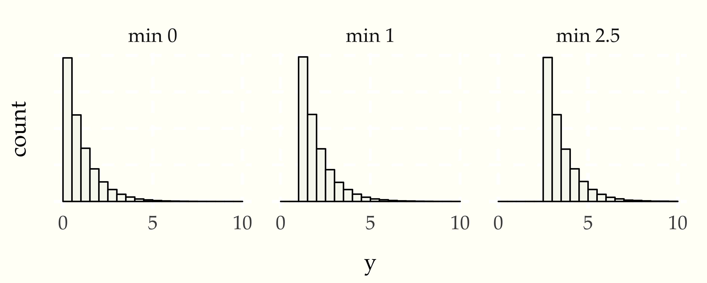
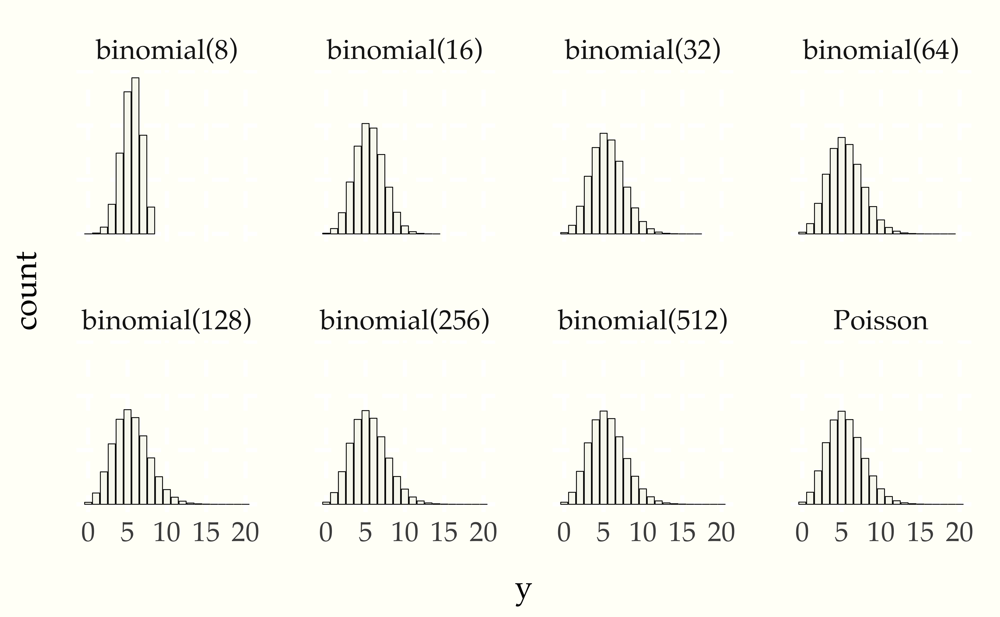

In this chapter, we’ll see how the exponential distribution can be used to model the waiting time between events. For example, waiting times might be used to model the time between salmon swimming upstream, the rate at which a user sends text messages, or the time between neutrinos arriving at a particle detector.
The Poisson distribution arises as the number of events in a fixed period of time, such as the number of salmon per hour or number of messages per day.241 We also consider generalizations to spatial and volumetric processes, such as the number of graffiti tags in given area of a city or the number of whales in a volume of the ocean. These may even be combined to model, say, the number of whales in a volume of the ocean in a given month.
The exponential distribution can be used to model the waiting time between events under two idealized assumptions. The first assumption is that the arrival process is homogeneous in time. No matter the time of day or night, arrivals happen at the same rate.242 Obviously, this is too limiting for many applications, such as anything to do with human or animal activity; in such cases, these simple processes are used as building blocks in more complex spatio-temporal models. The second assumption is that the times between successive events is independent. It doesn’t matter if it’s been an hour since the last text message was sent or if one was just sent ten seconds ago, the probability another message will arrive in the next minute is the same. In other words, the expected waiting time for the next arrival doesn’t change based on how long you’ve already been waiting.
A distribution of arrival times satisfying these properties is the exponential distribution. If \(Y \sim \mbox{exponential}(1)\) has a standard exponential distribution, then its density has a particularly simple form243 We can work backward from this density to the definite integral \[\int_0^{\infty} \exp(-y) = 1.\]
\[ p_Y(y) = \exp(-y). \]
For example, let’s plot a few simulations of arrivals where the waiting time between arrivals is distributed according to a standard exponential distribution.244 We will circle back and explain how to generate exponential variates shortly.
We can simulate a sequence of arrivals during \(\lambda\) time units,
assuming the waiting time between arrivals is distributed as standard
exponential. We start at time \(t = 0\) and continue adding the waiting
times \(w_n \sim \mbox{exponential}(1)\) until we pass a time \(\lambda\),
at which point we return the arrival times we have accumulated.245 The
loop notation 1:infinity is meant to indicate that n is
unbounded. Such “forever” loops must be broken with internal logic
such as the return in this case.
t = 0
for n in 1:infinity
w[n] = exponential_rng(1)
t += w[n]
if (t > lambda)
return y
y[n] = tLet’s look at four realizations of this process up to time \(\lambda = 10\).
Figure 21.1: Four simulations of the first \(\lambda = 10\) time units of an arrival process where waiting times are distributed as \(\mbox{exponential}(1)\).
A different number of arrivals occur in the different simulations.
As with any continuous distribution, the exponential may be scaled. As with scaling the normal distribution, this simply stretches or shrinks the distribution without changing its basic shape. In the normal distribution, the scale parameter \(\sigma\) multiplies a standard normal variate to get a scale \(\sigma\) variate. Instead of multiplying a standard exponential variate by a scale, it is traditional to divide it by a rate (an inverse scale).
If \(U \sim \mbox{exponential}(1)\) is a standard exponential variable, then \(Y = U / \lambda\) is an exponential variable with rate \(\lambda\) (i.e., with scale \(1 / \lambda\)), for which we write \(Y \sim \mbox{exponential}(\lambda)\), and have the following246 This is a straightforward derivation using the usual Jacobian formula, for which the adjustment for the inverse transform is \[\Big| \, \frac{\mathrm{d}}{\mathrm{d} y} \lambda \times y \, \Big| = \lambda.\]
\[ \begin{array}{rcl} p_Y(y \mid \lambda) & = & \lambda \times p_U\left( \lambda \times y \right) \\[6pt] & = & \lambda \times \exp \left(\lambda \times - y \right). \end{array} \]
Simulating a standard exponential variate is straightforward because of the simple form of the cumulative distribution function. If \(Y \sim \mbox{exponential}(1)\), then the probability density function is \(p_Y(y) = \exp(-y)\) and the cumulative distribution function \(F_Y : [0, \infty) \rightarrow [0, 1)\) is given by
\[ \begin{array}{rcl} F_Y(y) & = & \int_0^y \exp(-v') \mbox{d}v \\[4pt] & = & 1 - \exp(-y). \end{array} \]
This function is easily inverted to produce the inverse cumulative distribution function, \(F_y^{-1}:[0,1) \rightarrow [0, \infty)\),
\[ F_Y^{-1}(u) = - \log (1 - u). \]
If we take \(U \sim \mbox{uniform}(0,1)\), then
\[ F_Y^{-1}(u) \sim \mbox{exponential}(1). \]
This is a very general trick for distributions for which we can compute the inverse cumulative distribution function. We first saw this used to generate logistic variates by log-odds transforming uniform variates.247 The log-odds function, written \(\mbox{logit}(u)\), is the inverse cumulative distribution function for the standard logistic distribution.
The pseudocode follows the math, so we can generate standard exponential variates as follows.
u <- uniform(0, 1)
y <- -log(1 - u)It is traditional here to replace the term \(\log 1 - u\) with the term \(\log u\) because if \(u \sim \mbox{uniform}(0,1)\), then we also know \(1 - u \sim \mbox{uniform}(0,1)\). We can then generalize to the nonstandard exponential with rate (i.e., inverse scale) \(\lambda\) by dividing. This gives us the following exponential distribution pseudorandom number generator.
exponential_rng(lambda)
u <- uniform(0, 1)
y <- -log(u) / lambda
return ySuppose we simulate a sequence standard exponential waiting times, \(W_1, \ldots, W_N \sim \mbox{exponential}(1).\) Now what if we look at the distribution of all of the \(W\) and compare it to the distribution of just those \(W > 1\) and those \(W > 2.5\). To make sure we have the same number of draws so the histograms are scaled, we’ll take 1000 of each situations by using simple rejection sampling.
for (m in 1:M)
w[m] = -1
while (w[m] < min)
w[m] = exponential_rng(1)Let’s plot histograms of \(10\,000\) draws for \(\mbox{min} = 0, 1, 2.5\).
Figure 21.2: Plot of \(10\,000\) draws from the standard exponential distribution (left) and discarding all draws below 1 (center) or 2.5 (right). Each histogram is the same, just shifted. This illustrates the memoryless of the exponential distribution as a model of waiting times—no matter how long you have already waited, the remaining wait time distribution is the same.
The resulting histograms are almost identical because each condition has exactly the same distribution shifted over by the amount of wait time already experienced.
We can characterize this property in terms of the probability density function. If \(Y \sim \mbox{exponential}(\lambda)\), for some fixed \(\lambda\), then for any fixed \(c > 0\), we have
\[ p_Y(y \mid \lambda) \ \propto \ p_Y(y + c \mid \lambda). \]
The Poisson distribution is a discrete distribution over counts \(\mathbb{N} = 0, 1, 2, \ldots\) which can be defined as the number of arrivals that occur in a fixed unit \(\lambda\) of time when the waiting times \(w_n\) between arrivals are independently standard exponential distributed, \(w_n \sim \mbox{exponential}(1).\)
If \(Y \sim \mbox{Poisson}(\lambda)\), then we can simulate values of \(Y\) as follows.
poisson_rng(lambda)
t = 0
y = 0
while (true)
w = exponential_rng(1)
t += w
if (t > lambda)
return y
else
y += 1We start at time \(t = 0\), with \(y = 0\) arrivals, then continue simulating arrivals until we have past the total time \(\lambda\), at which point we report the number of arrivals we have seen before the arrival that put us past time \(\lambda.\)
We can use this simulator to estimate the expectation and variance of a variable \(Y \sim \mbox{Poisson}(\lambda)\), as follows
for (m in 1:M)
y[m] = poisson_rng(lambda)
print 'estimated E[Y] = ' mean(y)
print 'estimated var[Y] = ' variance(y) estimated E[Y] = 9.98
estimated var[Y] = 9.96Another way to arrive at the Poisson distribution is as the limit of a sequence of binomial distributions. A random variable with a Poisson distribution is unbounded in that any value may arise.248 All but a few values will be wildly improbable, but still possible. A binomial variable on the other hand takes on values between 0 and \(N\) for some fixed \(N\). But if we let that the total count \(N\) grows without bound while keeping the expected value at \(\lambda\), the binomial approaches the Poisson distribution,
\[ \mbox{Poisson}(y \mid \lambda) = \lim_{N \rightarrow \infty} \mbox{binomial}(N, \lambda / N). \]
We can see what the binomial approximation looks like through simulation. We’ll simulate \(\mbox{binomial}(N, 5.5 / N)\) for various \(N\) and compare with \(\mbox{Poisson}(5.5)\).
Figure 21.3: Histograms of \(1\,000\,000\) draws for a \(\mbox{Poisson}(5.5)\) and successively larger \(N\) binomial approximations.
